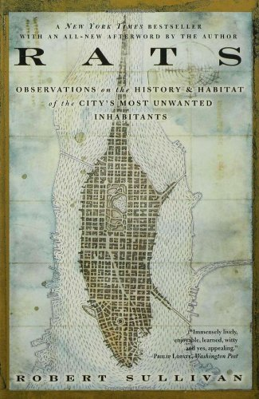

rats have effected books in many ways one of these is that there are many books about rags and their inpct on the past. there are also many books on rats antomany. One of these books about rats goes over the history and habitat. there amy other books like this one going over rat population. there are also physical effects rat have on books. In some post-apocalyptic or dark fantasy comics, rats are depicted as destroyers of books in abandoned libraries or storage rooms, showing a breakdown of order and civilization. In some novels, rats damaging books are used metaphorically to signify the encroachment of ignorance or censorship, where knowledge is being "devoured" or wasted. Overall, the depiction of rats on books in media is a poignant symbol of decay, ignorance, and the fragility of human knowledge. Through these portrayals, creators communicate deeper themes about the loss of culture, the impermanence of civilization, and the erosion of learning in the face of time and neglect.
